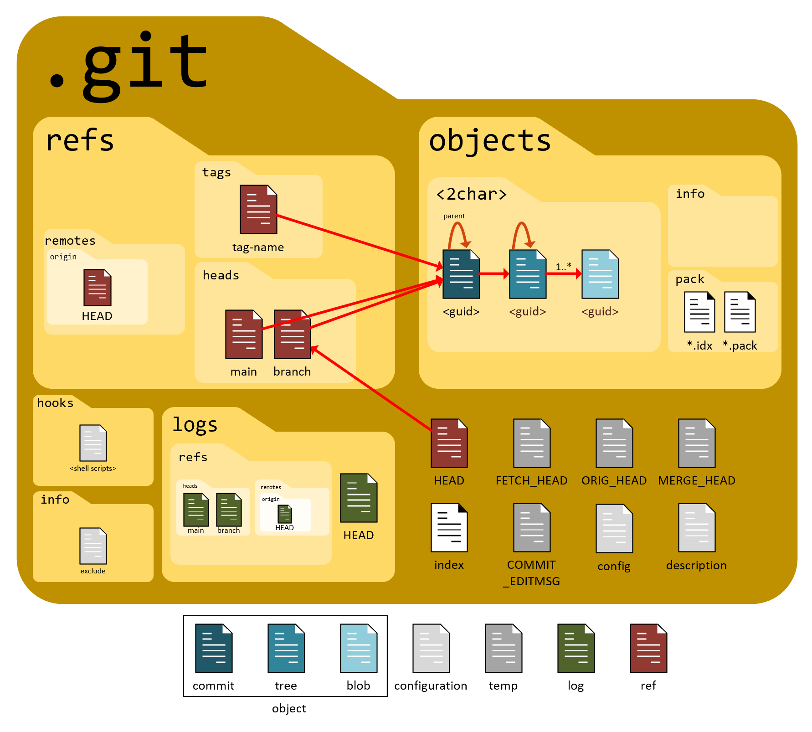
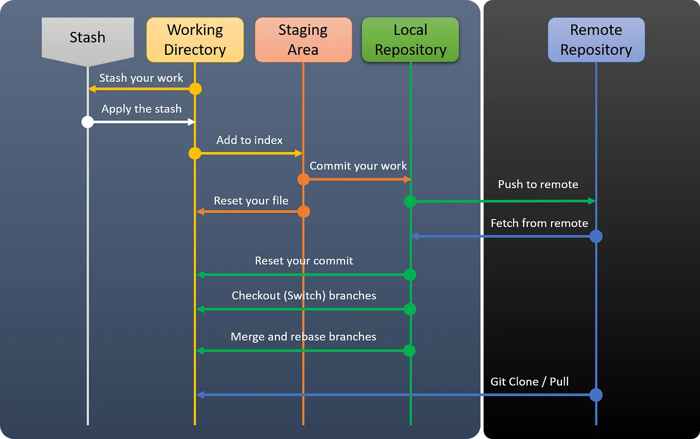
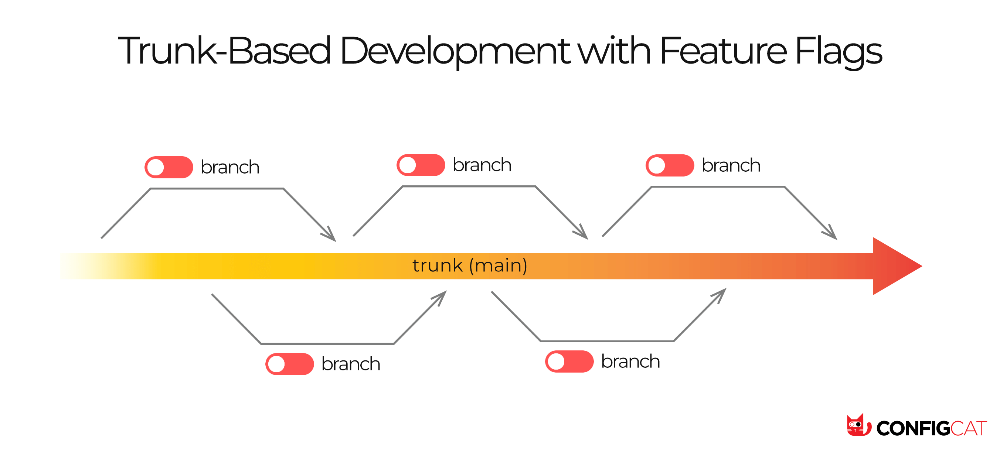
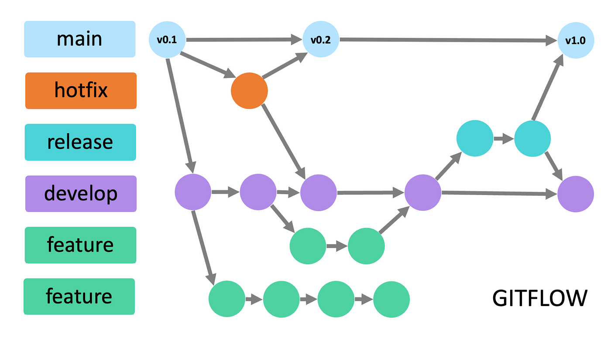
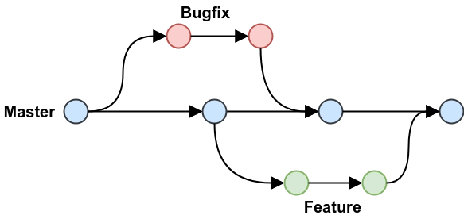
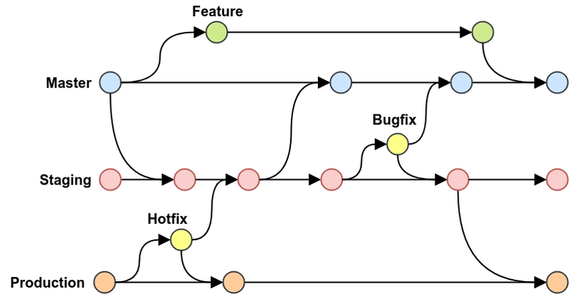
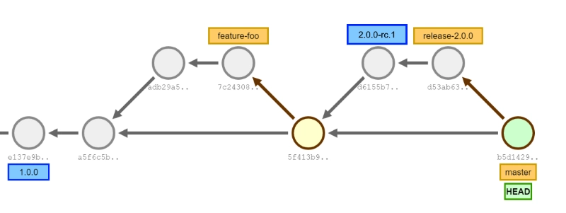

Internal Engineering Guide
Git for software developers
A one-page scrolling visual guide to Git collaboration: repositories, states, workflow, branching models, hooks, conflicts, undo choices, and command-line help.

Git Internal
Commits point to snapshots.
Git stores history as objects. A commit points to a tree, and trees point to blobs that represent file content. Branches and tags are lightweight references to commits.
A checkpoint with metadata, message, parent link, and tree pointer.
Trees describe directories. Blobs hold file contents.

Three States
Edit, select, then record.
Git separates files on disk, selected changes for the next commit, and committed history. This is why clean commits are possible even when your working directory contains mixed changes.
git status shows where each change currently
lives.
Use staging to group related changes into one coherent checkpoint.
Basic Workflow
The daily collaboration loop.
Most engineering teams rely on short-lived branches, small commits, pull requests, review, CI, and protected merges.
Good PR shape
- Small enough to review
- Clear enough to understand
- Safe enough to merge
Branching Strategies
Branching strategy is a release decision.
The right model depends on deployment frequency, release governance, team discipline, and how stable main must remain. The next sections separate each strategy so the tradeoffs are easier to compare.
Prefer short-lived branches and strong CI.
Use PRs or MRs to keep collaboration visible.
Add release branches when QA or approval needs time.
Protect main and make broken builds visible quickly.

Branching Strategy
Trunk-Based Development
Integrate into main frequently. Branches live for hours or a few days, and feature flags hide unfinished work.
Branching Strategy
Git Flow
A structured model with main, develop, feature, release, and hotfix branches. It favors release control over speed.


Branching Strategy
GitHub Flow
Branch from main, open a pull request, review, pass CI, and merge back into a deployable main branch.
Branching Strategy
GitLab Flow
Extend the main-branch workflow with environment branches such as staging or production when deployment paths need to be visible.


Branching Strategy
Release Branches
Create a release branch to stabilize a deployment candidate while new development continues on main.
Branching Conclusion
Default simple, add process only when needed.
For most product teams, GitHub Flow or GitLab Flow is the best starting point. Move toward trunk-based when CI and feature flags are strong. Use Git Flow or release branches when release governance is the real constraint.
GitHub / GitLab Flow for simple review-driven collaboration.
Trunk-based development when main can stay releasable.
Git Flow or release branches for QA, UAT, or versioned delivery.
Git Hooks Workflow
Move quality checks earlier.
Local hooks should be fast and clear. Heavy validation belongs in CI.
Write code
Edit files in the working directory.
pre-commit
Format, lint, type check, or scan secrets.
commit-msg
Enforce message style before saving the commit.
pre-push
Run heavier local tests before publishing.
CI
Build, test, scan, and gate the merge remotely.
Hook quality bar
- Fast enough for daily use
- Reliable on every machine
- Clear failure message
- Useful enough to block
Conflict Resolution
Git stops when a human must choose.
Resolve conflicts by deleting markers, keeping the correct final code, staging the file, and continuing the merge or rebase.
<<<<<<< HEAD const title = "Sign In"; ======= const title = "Member Login"; >>>>>>> feature/member-login
Resolution loop
- Open conflicted files
- Remove markers
- Keep or combine code
git addresolved files- Continue merge or rebase
Undo Decision Tree
Choose undo commands based on sharing risk.
The most important question is whether the change has already been pushed or pulled by someone else.
Has the change been pushed or shared?
Shared history should be preserved. Local private history can be rewritten more freely.
git commit --amendgit restore --staged filegit restore filegit reset --soft HEAD~1
git revert <commit>- Avoid public history rewrite
- Prefer
--force-with-leaseover force - Treat
reset --hardas destructive
Practical rule
Use rewrite commands for local cleanup. Use
revert when history is already shared.
Command-Line Guide
Do not memorize Git. Know how to ask Git.
The command line already contains the manual, command-specific docs, and quick flag references.
General manual.
Full command docs.
Quick flag reference.
Inside man pages
Spacenext page/wordsearchnnext resultqquit